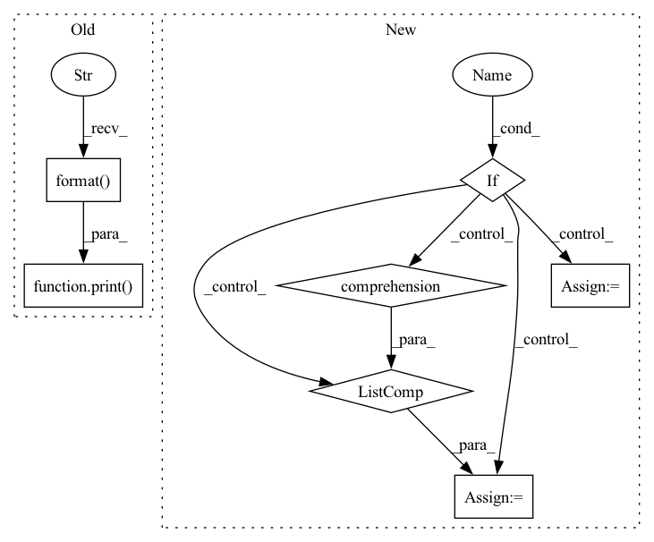

Pattern ID :41969

Before Change
raise ValueError(f"unknown --loss-type {self.loss_type}")
if self.use_dtw_loss:
print("Regular Loss: {}".format(loss))
dtw_loss = self.dtw_criterion(after_outs, speech).mean() / 2000.0 // division to balance orders of magnitude
// print("\n\n")
// import matplotlib.pyplot as plt
// import librosa.display as lbd
After Change
loss = loss + attn_loss
// calculate alignment loss
if self.use_alignment_loss:
if self.reduction_factor > 1:
olens_in = speech_lengths.new([olen // self.reduction_factor for olen in speech_lengths])
else:
olens_in = speech_lengths
align_loss = self.alignment_loss(att_ws, text_lengths, olens_in, step)
loss = loss + align_loss
return loss
In pattern: SUPERPATTERN
Frequency: 3
Non-data size: 7
Instances
Fragment ID: 117635363
Project Name: digitalphonetics/ims-toucan
Commit Name: f4b6225ffb1360b67aca1559ae7fb18b17788dbf
Time: 2021-09-26
Author: florian.lux@ims.uni-stuttgart.de
File Name: TrainingInterfaces/Text_to_Spectrogram/Tacotron2/Tacotron2.py
M Class Name: Tacotron2
N Class Name: Tacotron2
M Method Name: forward(8)
N Method Name: forward(7)
M Parent Class: torch.nn.Module
N Parent Class: torch.nn.Module
M File Name: TrainingInterfaces/Text_to_Spectrogram/Tacotron2/Tacotron2.py
N File Name: TrainingInterfaces/Text_to_Spectrogram/Tacotron2/Tacotron2.py
M Start Line: 233
M End Line: 242
N Start Line: 183
N End Line: 261
'>
Before Change
"You may see unexpected behavior when restarting "
"from checkpoints.")
print("Use GPU: {} for training".format(args.gpu))
cudnn.benchmark = True
// Data loading code
normalize = transforms.Normalize(mean=[0.485, 0.456, 0.406], std=[0.229, 0.224, 0.225])
After Change
classifier = ImageClassifier(backbone, num_classes).cuda()
// define loss function
if args.adversarial:
thetas = [Theta(dim).cuda() for dim in (classifier.features_dim, num_classes)]
else:
thetas = None
jmmd_loss = JointMultipleKernelMaximumMeanDiscrepancy(
kernels=(
[GaussianKernel(alpha=2 ** k) for k in range(-3, 2)],
'>
Fragment ID: 117635367
Project Name: thuml/transfer-learning-library
Commit Name: 904ddf1c2173d282968c2eb2efac00a133583180
Time: 2020-04-29
Author: 13126830206@163.com
File Name: examples/jan.py
M Class Name: AnonimousClass
N Class Name: AnonimousClass
M Method Name: main(1)
N Method Name: main(1)
M Parent Class:
N Parent Class:
M File Name: examples/jan.py
N File Name: examples/jan.py
M Start Line: 40
M End Line: 86
N Start Line: 74
N End Line: 93
'>
Before Change
"You may see unexpected behavior when restarting "
"from checkpoints.")
print("Use GPU: {} for training".format(args.gpu))
cudnn.benchmark = True
// Data loading code
normalize = transforms.Normalize(mean=[0.485, 0.456, 0.406], std=[0.229, 0.224, 0.225])
After Change
classifier = ImageClassifier(backbone, num_classes).cuda()
// define loss function
if args.adversarial:
thetas = [Theta(dim).cuda() for dim in (classifier.features_dim, num_classes)]
else:
thetas = None
jmmd_loss = JointMultipleKernelMaximumMeanDiscrepancy(
kernels=(
[GaussianKernel(alpha=2 ** k) for k in range(-3, 2)],
'>
Fragment ID: 117635365
Project Name: thuml/transfer-learning-library
Commit Name: a14c5201dda7a853703a470501d4b82b42d46182
Time: 2020-04-29
Author: 13126830206@163.com
File Name: examples/jan.py
M Class Name: AnonimousClass
N Class Name: AnonimousClass
M Method Name: main(1)
N Method Name: main(1)
M Parent Class:
N Parent Class:
M File Name: examples/jan.py
N File Name: examples/jan.py
M Start Line: 40
M End Line: 86
N Start Line: 74
N End Line: 95